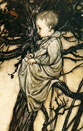

Origin
J. M. Barrie first used Peter Pan as a character in a section of The Little White Bird (1902), an adult novel where he appears as a seven-day-old baby in the chapter entitled Peter Pan in Kensington Gardens. Following the success of the 1904 play, Barrie's publishers, Hodder and Stoughton, extracted chapters 13–18 of The Little White Bird and republished them in 1906 under the title Peter Pan in Kensington Gardens, with the addition of illustrations by Arthur Rackham.
He returned to the character of Peter Pan as the centre of his stage play entitled Peter Pan, or The Boy Who Wouldn't Grow Up, which premiered on 27 December 1904 in London. Barrie later adapted and expanded the play's story line as a novel, published in 1911 as Peter and Wendy.
Physical appearance
Barrie never described Peter's appearance in detail, even in his novel, leaving it to the imagination of the reader and the interpretation of anyone adapting the character. In the play, Peter's outfit is made of autumn leaves and cobwebs. His name and playing the flute or pipes suggest the mythological character Pan. Barrie mentions in Peter and Wendy that Peter Pan still had all his "first teeth". He describes him as a beautiful boy with a beautiful smile, "clad in skeleton leaves and the juices that flow from trees".
Traditionally, the character has been played on stage by a petite adult woman. In the original productions in the UK, Peter Pan's costume was a reddish tunic and dark green tights, such as that worn by Nina Boucicault in 1904. This costume is exhibited in Barrie's Birthplace. The similar costume worn by Pauline Chase (who played the role from 1906 to 1913) is displayed in the Museum of London. Early editions of adaptations of the story also depict a red costume but a green costume (whether or not made of leaves) becomes more usual from the 1920s, and more so later after the release of Disney's animated movie.
In the Disney films, Peter wears an outfit that consists of a short-sleeved green tunic and tights apparently made of cloth, and a cap with a red feather in it. He has pointed elf-like ears, brown eyes and his hair is red. In Hook (1991), the character is played as an adult by Robin Williams, with blue eyes and dark brown hair; in flashbacks to him in his youth, his hair is light brown. In this film his ears appear pointed only when he is Peter Pan, not as Peter Banning. His Pan attire resembles the Disney outfit (minus the cap). In the live-action 2003 Peter Pan film, he is portrayed by Jeremy Sumpter, who has blond hair and green eyes. His outfit is made of leaves and vines.
In the novel Peter Pan in Scarlet (2006), Geraldine McCaughrean describes him as having blue eyes and light hair (or at least any colour lighter than black). In this novel, Never Land has moved on to autumn, so Peter wears a tunic of jay feathers and maple leaves. In the Starcatcher stories written by Dave Barry and Ridley Pearson, Peter is described with carrot-orange hair and bright blue eyes.
In the 2011 TV miniseries Neverland, released by Sky Movies in the UK and SyFy network in the US, Peter (played by Charlie Rowe) is portrayed with dark brown hair and eyes. He plays a flute instead of pan pipes.
Personality
Peter is an exaggerated stereotype of a boastful and careless boy. He claims greatness, even when such claims are questionable (such as congratulating himself when Wendy re-attaches his shadow). In the play and book, Peter symbolizes the selfishness of childhood, and is portrayed as being forgetful and self-centred.
Peter has a nonchalant, devil-may-care attitude, and is fearlessly cocky when it comes to putting himself in danger. Barrie writes that when Peter thought he was going to die on Marooners' Rock, he felt scared, yet he felt only one shudder. With this blithe attitude, he says, "To die will be an awfully big adventure". In the play, the unseen and unnamed narrator ponders what might have been if Peter had stayed with Wendy, so that his cry might have become, "To live would be an awfully big adventure!", "but he can never quite get the hang of it".
Age
J.M. Barrie created his character based on his older brother, David, who died in an ice-skating accident the day before his 14th birthday. His mother and brother thought of him as forever a boy. The "boy who wouldn't grow up" character has been described as a variety of ages.
In The Little White Bird (1902), he was only seven days old.
Although his age is not stated in Barrie's play (1904) or novel (1911), the book says that he still had all his baby teeth. In other ways, the character appears to be older, about 12–13 years old.
Abilities
Peter's archetypal quality is his unending youth. In Peter and Wendy, it is explained that Peter must forget his own adventures and what he learns about the world in order to stay childlike. The prequels by Barry and Pearson attribute Peter's everlasting youth to his exposure to starstuff, a magical substance which has fallen to earth.
Peter's ability to fly is explained, but inconsistently. In The Little White Bird he is able to fly because he is said to be part bird, like all babies. In the play and novel, he teaches the Darling children to fly using a combination of "lovely wonderful thoughts" and fairy dust. In Barrie's Dedication to the play Peter Pan, The Boy Who Wouldn't Grow up, the author attributes the idea of fairy dust being necessary for flight to practical needs:
Peter has an effect on the whole of Neverland and its inhabitants when he is there. Barrie states that although Neverland appears different to every child, the island "wakes up" when Peter returns from his trip to London. In the chapter "The Mermaids' Lagoon" in the book Peter and Wendy, Barrie writes that there is almost nothing that Peter cannot do. He is a skilled swordsman, rivalling even Captain Hook, whose hand he cut off in a duel. He has remarkably keen vision and hearing. He is skilled in mimicry, copying the voice of Hook, and the tick-tock of the Crocodile.
In both Peter Pan and Wendy and Peter Pan in Scarlet, Peter's ability to imagine things into existence is noted. This ability is featured more strongly in Peter Pan in Scarlet. He also creates imaginary windows and doors as a kind of physical metaphor for ignoring or shunning his companions. He is said to be able to feel danger when it is near.
In Peter and Wendy, Barrie states that the Peter Pan legend Mrs Darling heard as a child was that when children died, he accompanied them part of the way to their destination so they would not be frightened. This is a role similar to the Greek god Hermes as a psychopomp.
In the original play, Peter states that no one must ever touch him (though he does not know why). The stage directions specify that no one does so throughout the play. Wendy approaches Peter to give him a "thimble" (kiss), but is prevented by Tinker Bell.
Cultural allusions
The character's name comes from two sources: Peter Llewelyn Davies, one of the five Llewelyn Davies boys who inspired the story, and Pan, a minor deity of Greek mythology who plays pipes to nymphs and is part human and part goat. This is referenced in Barrie's works (particularly Peter Pan in Kensington Gardens) where Peter Pan plays pipes to the fairies and rides a goat. The god Pan represents Nature or Man's natural state in contrast to Civilisation and the effects of upbringing on human behaviour. Peter Pan is a free spirit, being too young to be burdened with the effects of education or to have an adult appreciation of moral responsibility. As a 'betwixt-and-between', who can fly and speak the language of fairies and birds, Peter is part animal and part human. According to psychologist Rosalind Ridley, by comparing Peter's behaviour to adults and to other animals, Barrie raises many post-Darwinian questions about the origins of human nature and behaviour. As 'the boy who wouldn't grow up' Peter exhibits many aspects of the stages of cognitive development seen in children and can be regarded as Barrie's memory of himself as a child, being both charmingly childlike and childishly solipsistic.
Relationships
Family
Peter Pan ran away from his parents when he was a baby but nothing more is known of them. A younger sibling is referred to in the chapter "Lock-Out Time" in Peter Pan in Kensington Gardens but is not mentioned again.
Parents
Peter flew away from his parents as a baby, as told in Peter Pan in Kensington Gardens and Peter and Wendy. Finding the window closed and seeing a new baby in the house when he returned some time later, he believed his parents no longer wanted him and never came back.
In Hook, Peter remembers his parents, specifically his mother, who wanted him to grow up and go to the best schools in London to become a judge like his father and have a family of his own. After Peter flew away to Kensington Gardens, he returned to find his parents had forgotten about him and had another child.
In Peter and the Starcatchers he is an orphan. In Peter and the Secret of Rundoon, his friends Molly and George discover who his parents are.
Jack and Maggie
In Hook, Peter states that the reason he wanted to grow up was to be a father. He met and fell in love with Wendy's granddaughter, Moira, which causes him to forsake his immortality and marry her. They have two children in the movie, Jack and Maggie. However, he is estranged from both due to his constant absences and broken promises, which irritates Moira. His preteen son, Jack, is often frustrated with Peter's prolonged absences and turns to Captain Hook for a father figure. His young daughter Maggie retains faith in Peter, which helps him and the Lost Boys rescue her and Jack from Hook. Peter retains much of his fun self after his final visit to Neverland, which strengthens his relationship with Jack, Maggie and Moira.
Friends
Maimie Mannering
While in Kensington Gardens, Peter meets a lost girl named Maimie Mannering and the two quickly become friends. Peter proposes marriage to Maimie. While Maimie wants to stay in the Gardens with Peter, she comes to realise that her mother is so worried that she must return to her. Maimie promises to always remember Peter and goes back to her mother. When Maimie grows up, she continues to think of Peter, dedicating presents and letters to him. To remember Maimie, Peter rides the imaginary goat that Maimie created for him. She is considered to be the literary predecessor of Wendy Darling.
The Darlings
Wendy Darling
Wendy is hinted to have romantic feelings for Peter, but cannot be with him because of his inability to love back. In the 2003 film Peter Pan, the feeling is mutual. Captain Hook can only take away Peter's ability to fly by thoughts of Wendy leaving him, growing up, and replacing him with a husband. Wendy saves Peter by giving him her hidden kiss (signifying he is her true love); this gives him the will to live. In the movie Hook, an older Wendy implies that she used to (and perhaps, still does) have feelings for Peter, saying that she was shocked that he did not prevent her wedding day. In the sequel to the 1953 Disney film, Return to Neverland, Peter and a grown-up Wendy are briefly, but happily, reunited after many years and continue to show feelings for each other.
In the original novel, Peter later befriends Wendy's daughter Jane (and her subsequent daughter Margaret), and it is implied that this pattern will go on forever. From time to time Peter visits the real world, and befriends children. Wendy Darling, whom he recruited to be his "mother", is the most significant of them; he also brings her brothers John and Michael to Neverland at her request. It is mentioned that Wendy was the only girl who captured his attention.
John Darling and Michael Darling
John, the older brother of the Darlings, proves to be extremely mature for his age. He becomes fascinated with piracy and imitates Captain Hook while playing at home with his siblings. Not only sophisticated, John is also courageous and smart. Peter typically tasks John with the responsibility of directing the Lost Boys when Peter is absent. Michael, the youngest of the Darlings, is convinced that Peter Pan is a real person after hearing Wendy's passionate narratives about him. During nursery games, it's Michael who plays the role of Peter Pan whom he looks up to.
Mary and George Darling
The parents of Wendy, John and Michael. Mr Darling works as a clerk in the City, and is named after George Llewelyn Davies. Mrs Darling is named after Mary Ansell, Barrie's wife.
Neverland inhabitants
Tiger Lily
Tiger Lily is the daughter of Great Big Little Panther, the chief of the Piccaninny Native American tribe resident in Neverland. Barrie refers to her as "a princess in her own right", and she is often described as such. She is kidnapped by the pirates and left to die on Marooners' Rock, but she is rescued by Peter. It is hinted later that she may have romantic feelings for Peter but he does not return them, as he is completely oblivious of other people's feelings. In the Disney film, Tiger Lily shows her gratitude by performing a dance for Peter and kissing him. The kiss makes him turn bright red, and makes Wendy jealous of Tiger Lily.
Tinker Bell
Tinker Bell, a common fairy who is Peter Pan's best friend and often jealously protective of him. She is the friend who helps him in his escapades. As his fairy, Tink’s malicious actions are usually caused by her jealousy which leads to the Lost Boys shooting arrows at Wendy (or nearly stoned to death in the Disney film), and eventually even reveals Peter’s hideout to Captain Hook, thinking that Wendy will be captured rather than Peter. When Tink realizes her serious mistake, she risks her own life by drinking the poison Hook has left for Peter (or pushing Hook’s bomb away in Disney's movie). Her extreme loyalty and dedication to Peter is everlasting.
The Lost Boys
Peter is the leader of the Lost Boys, which include Tootles, Nibs, Slightly, Curly, and The Twins. The Lost Boys is a band of boys who were lost by their parents after they "fall out of their perambulators", and came to live in Neverland; it is written that he "thins them out" when they start to grow up. They proved to always have his back and defend Peter in sticky situations, including dangerous encounters with Captain Hook.
The Crocodile
The crocodile (Tick-Tock in the Disney film) is Captain Hook's nemesis. After Peter Pan cut off Captain Hook's hand in a fight and threw it into the sea, the crocodile swallowed it and got a taste for Hook. It also swallowed a ticking clock, which alerts Hook of its presence.
Adversaries
Captain Hook
Captain Hook is Peter Pan's arch-enemy, whose right (or left) hand was cut off in a duel. Hook's crew, including Smee and Starkey, also consider him a foe. Captain Hook's two principal fears are the sight of his own blood (which is supposedly an unnatural colour) and one crocodile. His name plays on the iron hook that replaced his hand cut off by Peter Pan and eaten by a saltwater crocodile, which continues to pursue Hook.
In the 1953 animated film, Hook seeks revenge on Peter Pan for having fed the crocodile his hand, and refuses to leave Neverland without satisfaction. Hook is supported by Mr. Smee. After promising Tinker Bell 'not to lay a finger (or a hook) on Peter Pan', he lays a bomb in Peter's hideout. At the conclusion of the film, Hook is chased by the crocodile into the distance. Walt Disney insisted on keeping Hook alive, as he said: "The audience will get to liking Hook, and they don't want to see him killed.” In the sequel Return to Never Land, Hook mistakes Wendy's daughter Jane for Wendy, and uses her as bait to lure Peter Pan to his death.
Mr. Smee
Mr. Smee is Captain Hook's boatswain ("bo'sun") and right-hand man in J. M. Barrie's play Peter Pan and the novel Peter and Wendy. Mr. Smee is Captain Hook’s direct confidant. Unlike the other pirates, Smee is often clumsy and incapable of capturing any of the Lost Boys. Rather than engaging in Hook’s evil schemes, Smee finds excitement in bagging loot and treasures.